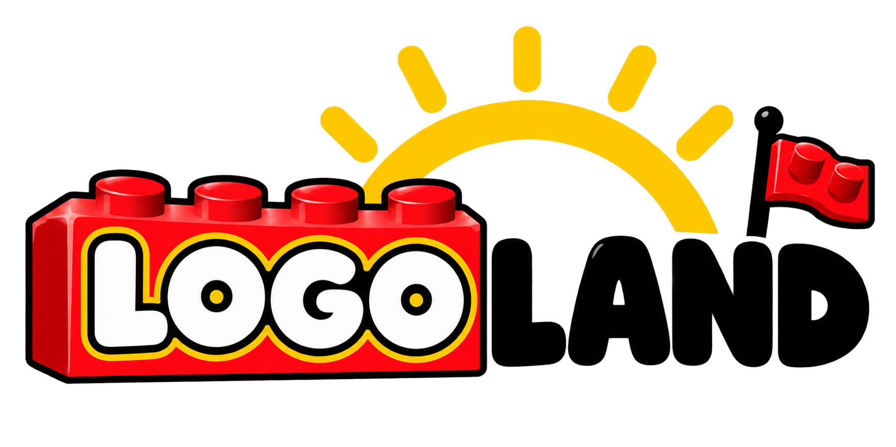

LOGO LAND / TRANSPARENT PNG
배경 없이, 필요한 곳에.
같은 투명 PNG를 서로 다른 바탕에 표시했습니다. 체크무늬와 배경색은 이 페이지의 CSS이며 로고 파일에 포함되지 않습니다.

기존 로고의 검정 글자를 유지했으므로 밝은 배경에 사용하는 것을 권장합니다. 어두운 배경에는 흰 글자 반전 버전을 별도로 요청하실 수 있습니다.
LOGO LAND / TRANSPARENT PNG
같은 투명 PNG를 서로 다른 바탕에 표시했습니다. 체크무늬와 배경색은 이 페이지의 CSS이며 로고 파일에 포함되지 않습니다.

기존 로고의 검정 글자를 유지했으므로 밝은 배경에 사용하는 것을 권장합니다. 어두운 배경에는 흰 글자 반전 버전을 별도로 요청하실 수 있습니다.